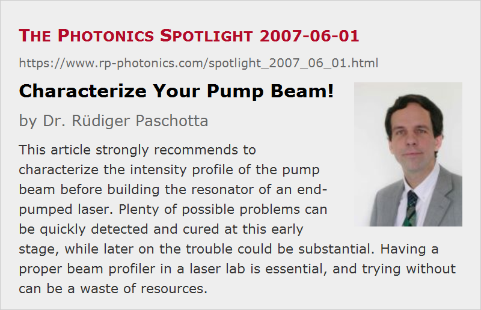

Characterize Your Pump Beam!
Posted on 2007-06-01 as a part of the Photonics Spotlight (available as e-mail newsletter!)
Permanent link: https://www.rp-photonics.com/spotlight_2007_06_01.html
Author: Dr. Rüdiger Paschotta, RP Photonics Consulting GmbH
Abstract: This article strongly recommends to characterize the intensity profile of the pump beam before building the resonator of an end-pumped laser. Plenty of possible problems can be quickly detected and cured at this early stage, while later on the trouble could be substantial. Having a proper beam profiler in a laser lab is essential, and trying without can be a waste of resources.

Ref.: encyclopedia articles on end pumping, beam profilers
The heading of this article is my “ceterum censeo” in the context of problems with end-pumped solid-state lasers. The origin of that is that often enough I have been dealing with cases where my customer had serious trouble with the performance of his laser, had spent a lot of time, already started to consider all sorts of laborious measures, but had not yet characterized the intensity profile of the pump beam.
Of course, I understand that: At the time when the pump beam is set up, you see no problem coming. You just want to see the operating laser as soon as possible. Once you see that it lases, but with no satisfactory performance even after a lot of tweaking, it would be a bit tedious to remove the laser setup in order to carefully monitor the pump beam profile. After all, you have already invested so much time! And as you wanted to make a nice compact setup, there is not enough space to do that without removing essential parts of the laser. So you continue trying this and that, but make no progress – until you have heard my ceterum censeo often enough to believe it.
Why is the pump beam profile all that important? Assuming that you strive for diffraction-limited beam quality, the size of the pump beam has to match that of the fundamental resonator mode, even though the details are a bit complicated: in high power lasers, you may want to have the pump beam a little larger, in low-power lasers perhaps a bit smaller; I discussed that two months ago, see The Photonics Spotlight 2007-04-01. (If anything is wrong, you may slightly adjust our resonator design instead of reshaping the pump beam profile.) In addition, asymmetries of the pump beam can be detrimental, as they can make the alignment power-dependent and thus more difficult. Moreover, one should try to avoid any “hot spots”, because these can have various adverse effects. But if you don't know about your pump intensity profile, you have no clue what your problem might be. So continue in the dark, or switch the light on! And the next time, you may be sufficiently patient to characterize the pump beam before investing any more work into building your laser.
A nice excuse is that you have no beam profiler in your lab. The simple remedy is then to buy one; an IR card is no substitute in that case, while by borrowing a beam profiler you will at least see that you need it yourself. Yes, a beam profiler or similar camera system does cost some substantial money. However, if you are regularly building lasers, this is less than you can easily waste by not making fast enough progress. In particular, see the article on time to market, which shows how to create the greatest financial damage without spending money.
This article is a posting of the Photonics Spotlight, authored by Dr. Rüdiger Paschotta. You may link to this page and cite it, because its location is permanent. See also the RP Photonics Encyclopedia.
Note that you can also receive the articles in the form of a newsletter or with an RSS feed.
Questions and Comments from Users
Here you can submit questions and comments. As far as they get accepted by the author, they will appear above this paragraph together with the author’s answer. The author will decide on acceptance based on certain criteria. Essentially, the issue must be of sufficiently broad interest.
Please do not enter personal data here; we would otherwise delete it soon. (See also our privacy declaration.) If you wish to receive personal feedback or consultancy from the author, please contact him e.g. via e-mail.
By submitting the information, you give your consent to the potential publication of your inputs on our website according to our rules. (If you later retract your consent, we will delete those inputs.) As your inputs are first reviewed by the author, they may be published with some delay.
|  |
If you like this page, please share the link with your friends and colleagues, e.g. via social media:
These sharing buttons are implemented in a privacy-friendly way!